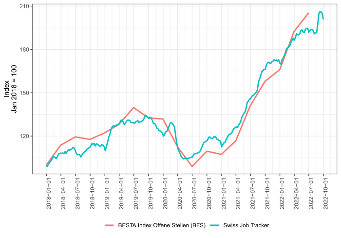

Today, we present the first release of swissjobtracker.ch. The website is a new dashboard with labor market indicators that allow monitoring the Swiss labor market in real time. For this purpose, the dashboard provides and visualizes new high-frequency time series derived from large-scale online data sources. Users of the dashboard can generate figures of the time series, download the figures and the data, and access the complete source code of the dashboard.
Along this dashboard we release new and unique indicators on the state of the online job market in Switzerland. The indices measure how the number of unique online job postings in Switzerland change over time. The job indices can be broken down by industry, broad occupation, and canton. A central asset of these indices is the fact that we publish them on a weekly basis. Hence, the new job indices allow monitoring the state of the Swiss job market at a very high temporal frequency. The Covid crisis clearly showcased how important it is to have timely indicators of labor market activity.
The data used to construct these indices cover the near-universe of job postings in Switzerland published on job boards and firm websites. These data are collected by the private company x28 AG. x28 is specialized in collecting and synthesizing data from online job openings posted in Switzerland. Due to the importance of the online job market (Buchmann et al. 2022), the data cover close to 4 out of 5 job openings in Switzerland. Consequently, there exists a close correspondence between our new index of unique online job openings and the official vacancy index published by the Federal Statistical Office (see Figure below). Our indices also evolve similarly to those of official statistics in individual industries. However, our indices are published at a higher frequency and in real-time. While the indices cover a large number of job openings in all Swiss regions, the coverage of the German-speaking part may be slightly better than the coverage of the Latin-speaking parts of the country. A documentation that explains our new indices and shows how they compare with data from official statistics can be found here.

Swiss Job Tracker and the new indices of job openings for Switzerland were created as part of the project “What Workers Want: Determinants and Implications of Job Search Strategies on an Online Job Platform” within the Swiss National Science Foundation’s (SNSF) National Research Program on “Digital Transformation” (NRP-77). The dashboard resulted from a collaboration between members of the KOF Swiss Economic Institute of ETH Zurich and the University of Lausanne. We thank x28 AG for data provision and support in constructing the indices.